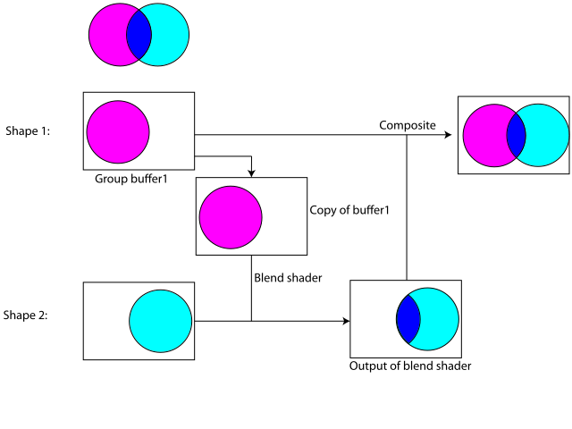

Alpha compositing
Blending
Isolated groups
Isolated groups on older GPU's

Non-isolated groups
Issues with non-isolated groups
Not widely implemented in software libraries or operating systems
Requires extra shape buffer
More processing (copying/merging/shader code)
Proposal: make isolated groups the default
Isolated problem